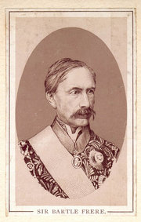

|  |
Portrait of Sir Bartle Frere |
Sir Henry Bartle Edward Frere, 1st Baronet (March 29, 1815 - May 29, 1884) was a British administrator.
Born at Clydach in Brecknockshire, he was the son of Edward Frere and a nephew of John Hookham Frere, of Anti-Jacobin and Aristophanes fame.
After leaving Haileybury, Bartle Frere was appointed a writer in the Bombay civil service in 1834. Having passed his language examination, he was appointed assistant collector at Poona in 1835, and in 1842 he was chosen as private secretary to Sir George Arthur, governor of Bombay. Two years later he became political resident at the court of the rajah of Satara; on the rajah's death in 1848 he administered the province both before and after its formal annexation in 1849. In 1850 he was appointed chief commissioner of Sind. In 1857, he sent detachments to Multan and to Sir John Lawrence in the Punjab in order to secure those locations during the Indian Mutiny. His services were fully recognized by the Indian authorities, and he received the thanks of both houses of parliament and was made K.C.B.
He became a member of the viceroy's council in 1859, and in 1862 was appointed governor of Bombay, where he continued his policy of municipal improvements, establishing the Deccan College at Poona, as well as a college for instructing natives in civil engineering. The collapse of the Bombay Bank in 1866, which he did little to prevent, brought his administration under fire, and in 1867 he returned to England where he was made G.C.S.I., and given honorary degrees from Oxford and Cambridge; he was also appointed a member of the Indian council.
In 1872 the foreign office sent him to Zanzibar to negotiate a treaty with the sultan, Barghash bin Said, for the suppression of the slave traffic. In 1875 he accompanied the Prince of Wales to Egypt and India, with such success that Lord Beaconsfield asked him to choose between being made a baronet or G.C.B. He chose the former, but the queen bestowed both honours upon him.
In 1877, Frere was made High Commissioner for Southern Africa by Lord Carnarvon, who hoped that within two years Frere would be the first governor of a South African dominion. The region was in such a state, however, that during his first year Frere had to cope with a Kaffir war and a rupture with the Cape (Molteno-Merriman) ministry. The Transkei Kaffirs were subjugated early in 1878 by General Thesiger and a small force of regular and colonial troops. Frere dismissed his obstructive cabinet and entrusted Mr (afterwards Sir) Gordon Sprigg to form a ministry. This solved the constitutional problems, but was overshadowed by Lord Carnarvon's resignation in early 1878, just as discontented South Africans were increasingly supporting the Zulu leader Cetshwayo. Frere impressed upon the colonial office his belief that Cetshwayo's army had to be eliminated, an idea that was generally accepted until Frere sent Cetshwayo an ultimatum in December 1878 and the home government realized the problems inherent in a native war.
Cetshwayo refused British demands, and Frere entrusted their enforcement to Lord Chelmsford. On January 11, 1879, British troops crossed the Tugela River; fourteen days later the disaster of Isandlwana was reported, and the House of Commons demanded that Frere be recalled. Beaconsfield supported him, however, and in a strange compromise he was censured and begged to stay on.
Frere wrote an elaborate justification of his conduct, which was adversely commented on by the colonial secretary (Sir Michael Hicks Beach), who "did not see why Frere should take notice of attacks; and as to the war, all African wars had been unpopular." Frere's rejoinder was that no other sufficient answer had been made to his critics, and that he wished to place one on record. "Few may now agree with my view as to the necessity of the suppression of the Zulu rebellion," he wrote. "Few, I fear, in this generation. But unless my countrymen are much changed, they will some day do me justice. I shall not leave a name to be permanently dishonoured."
The Zulu trouble, and disaffection brewing in the Transvaal, reacted upon each other most disastrously. The delay in giving the country a constitution afforded a pretext for agitation to the malcontent Boers, a rapidly increasing minority, while the reverse at Isandlwana had lowered British prestige. Owing to the Kaffir and Zulu wars, Sir Bartle had been unable to give his undivided attention to the state of things in the Transvaal until April 1879, when he was at last able to visit a camp of about 4,000 disaffected Boers near Pretoria. Though conditions were fairly grim, Frere managed to win the Boers' respect by promising to present their complaints to the British government, and to urge the fulfilment of the promises that had been made to them. The Boers did eventually disperse, on the very day upon which Frere received the telegram announcing the government's censure. On his return to Cape Town, he found that his achievement had been eclipsed -- first by the June 1, 1879 death of Napoleon Eugene, Prince Imperial in Zululand, and then by the news that the government of the Transvaal and Natal, together with the high commissionership in the eastern part of South Africa, had been transferred from him to Sir Garnet Wolseley.
When Gladstone's ministry came into office in the spring of 1880, Lord Kimberley had no intention of recalling Frere. In June, however, a section of the Liberal party memorialized Gladstone to remove him, and the prime minister weakly complied (August 1, 1880).
Upon his return Frere replied to the charges relating to his conduct respecting Afghanistan as well as South Africa, previously preferred in Gladstone's Midlothian speeches, and was preparing a fuller vindication when he died at Wimbledon from the effect of a severe chill on May 29, 1884.
He was buried in St Paul's Cathedral. In 1888, the prince of Wales unveiled a statue of Frere on the Thames embankment. Mount Bartle Frere (1622m), the highest mountain in Queensland, Australia is named after him, as is a boarding house at Haileybury.
His Life and Correspondence, by John Martineau, was published in 1895. For the South African anti-confederation view, see P. A. Molteno's Life and Times of Sir John Charles Molteno (2 vols.,London 1900).
A more recent work on Bartle Frere's life, "The Zulu and the Raj; The Life of Sir Bartle Frere" by D. P. O'Connor, examines details of Frere's life and motives more fully than was permissible in Victorian times when Martineau was writing. In particular, O'Connor points to Frere as a leading thinker on imperial defence. He sets the Zulu war in the context of the overall global crisis, contingent on the 1877 Balkan War, which was widely expected to result in war between Britain and Russia. Frere was sent to South Africa to turn this vital area into a secure bastion on the route to India, but was distracted from the task by the routine instability of the South African theatre.
|
|